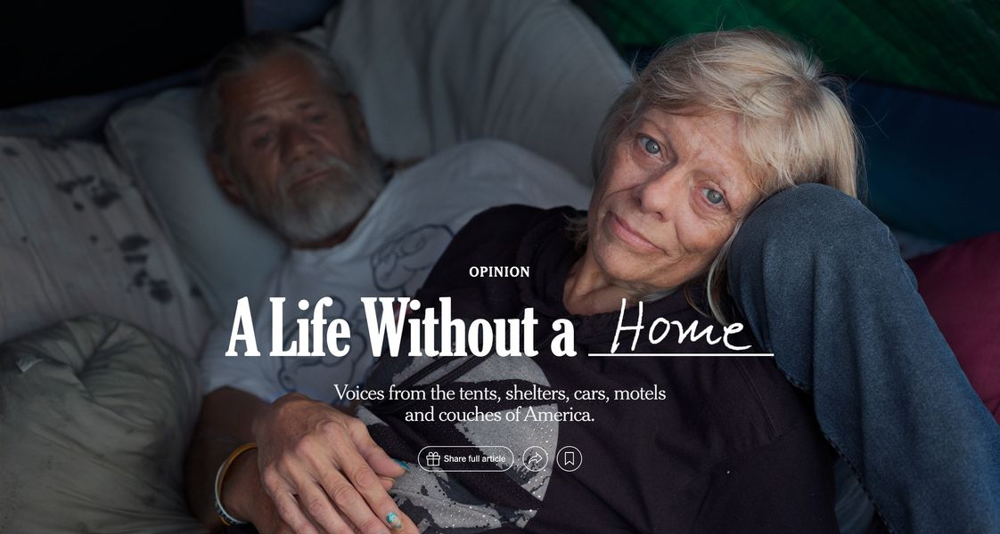

Timeline photos
The New York Times has a nice visual piece called "Voices from Inside America's Homelessness Crisis."
The number of homeless people in America this year is higher than any year since the federal government started counting homeless people in 2007.
I don't agree with the premise of the NYT piece. They keep saying:
"A motel is not a home."
"A car is not a home."
"A tent is not a home."
I wish people would stop saying that. It is Liberal brainwashing. Liberals believe everyone should live exactly like them. (That's why they keep saying low-income conservatives are voting against their own interests - they don't understand people who are not like themselves (most people don't).)
The piece is about asking homeless people what they think, and then the New York Times stamps this chant on top of everyone's story: [We Say:] THIS IS NOT A HOME!
These places are not a home ONLY if you don't want them to be your home.
One person in the story had gotten an apartment after 12 years of living outside. But he still goes urban camping in the summer because he feels claustrophobic and alone in his apartment. He misses the fresh air and his community.
I know several people who would benefit from a more fluid living style like that. The people I work with have a VERY hard time sitting locked up in an apartment alone. They crave the outdoor community that they have had for so many years.
Increased income inequality, life after Covid, no mental health hospitals, corporations scooping up all the houses in America, and raising the rent rates to unreachable heights. Of course, we need to re-examine what makes a home.
A car can be a fantastic home... if people weren't constantly chased around by the government to move along.
A tent can be a fantastic home... if people weren't constantly chased around by the government to move along.
A cave, a tiny house, an RV, a motel, can be a fantastic home... if people weren't constantly chased around by the government to move along.
If you made $850/month on disability, which would you prefer: Live in your car, not pay any rent and afford to go to McDonald's sometimes with your friend OR give all your money to your landlord and not afford to eat or buy medication?
I'm politically Left. But we must be careful about what Democrats are pushing for (and the New York Times is the mouthpiece of).
My neighbor moved to Akron from Cuba about 8 months ago. He lived in a Communist country for 40 years. He says the Democrats are showing all the signs of Communism he saw in Cuba.
They want complete control of everyone. What you say, where you live, who you vote for. Just be really careful of what the mainstream Democrats are pushing for. It's centralized control where all the money pools to a few people and we all become completely beholden to them for everything. Tents and cars break that control system. Tents and cars are freedom from the system.
Tents and cars MOST CERTAINLY can be homes if you are allowed to live in peace.